Program start
There is a extra program icon to start "dune4kids" on some systems
(Linux KDE/Gnome und SGI IRIX 4dwm). It looks like this:


On systems like Micro$oft Windows or MacOSX there is only a (other)
program icon:


Usually, the program of this icon starts the full version on white_dune
(with too much icons and too much menus) on first usage.

First, the program must be switched to the dune4kids user interface.
Click
here to find out, how to switch to the right user interface.
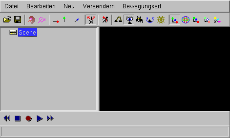
What can be done, when the program crashes ?
With a little luck it is possible to reload the last situation, when you
find a new ".dune_crash" file in the list of recent files in the "File" menu.
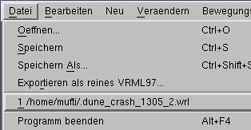
Navigation
Navigation is the movement in the 3D model.
This is important, cause you can easily in or behind your work and see nothing
on screen.
When you see nothing, there are 2 ways to continue, often both ways are
used together:
- Go backward
You can go forward and backwards by pressing the shift key on the
keyboard and the left button of the mouse.
In the "Examine" mode (when the icon _____ is pressed)
this also works with the middle botton of the mouse.
If your mouse has a mousewheel instead of a middle button, you must
press down the middle mousewheel.
- Man dreht die 3D-Welt
When you press together the left mouse button and the "Control" key
on the keyboard ("ctrl" on a english keyboard) you can turn the
whole 3D-world around you.
This is usually used to look to a new created object near to you
from all sides, but do not help, when you are into the void.
But keep in mind, that the content can be not only be hidden behind
you, it can be also above, below, left or right.
You need to turn around a lot to find your object.
Additionally, there is the possibility to press the left mouse button,
the "shift" and the "control" key together. In this case, it is possible
to move in the direction of the screen surface (up, down, left or right).
Icons for changes
To show how things can be changed, a box is created.

Icons to change whole objects:
- Move:


- Rotate:


- Scale up/down:


- Uniform scale up/down:


- Move turnpoint:


With small white boxes the objects itself can be changed.
With the arrow icons  the direction can be driven.
the direction can be driven.
For example, if the green arrow has been pressed


a small white box can only be moved in the direction of the green arrow.
 .
.
In the same way, as you can grab arrows on their base instead of their
top to move them into a plain, you can also press down two arrow icons
together  to move a small white box in a plain.
to move a small white box in a plain.
Example for animation
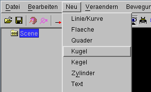
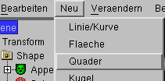
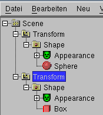
A lot of commands only work, when the right thing is selected (clicked
with the mouse)
In this case, a "Transform" must be selected.
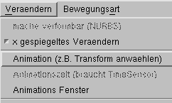
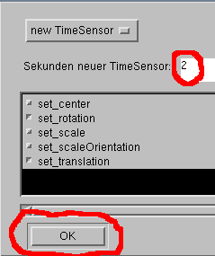
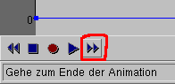
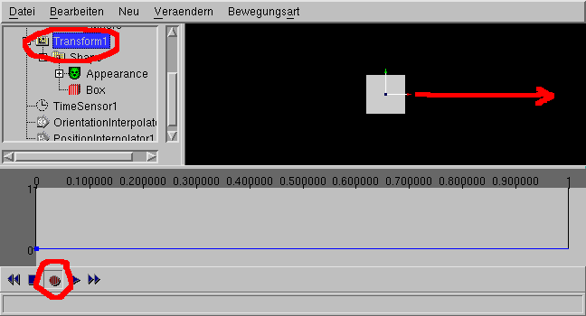
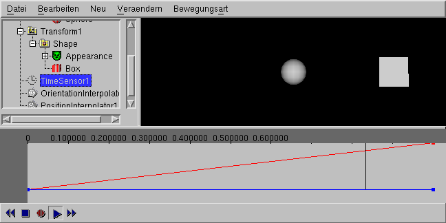
Example for modelling
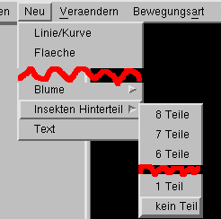
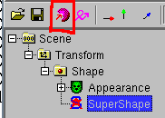
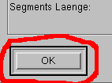
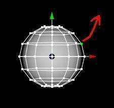
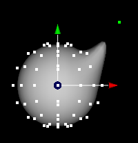
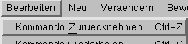
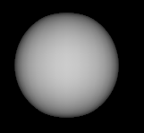
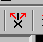
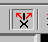
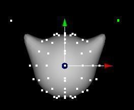
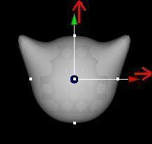
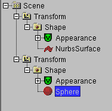
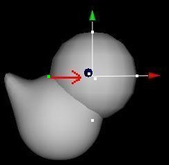
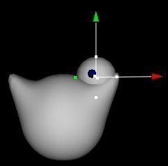
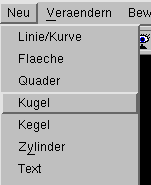
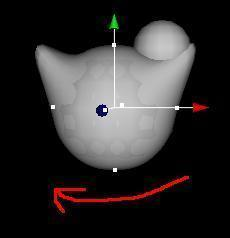
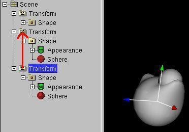
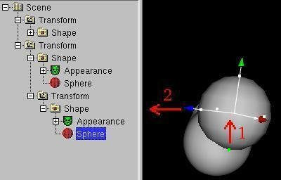
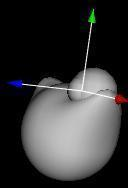
 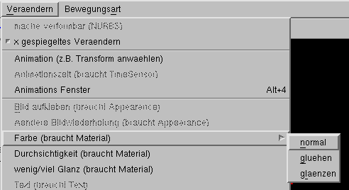
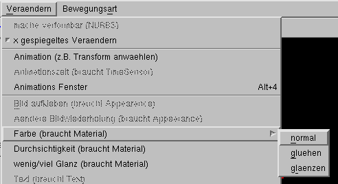
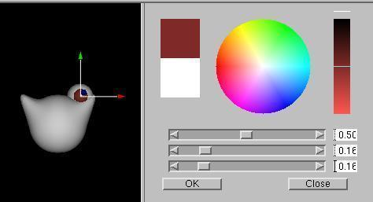
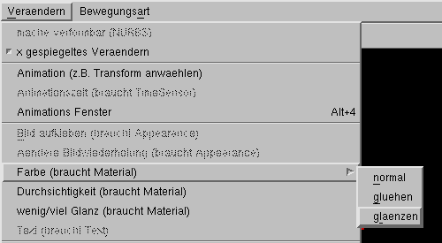
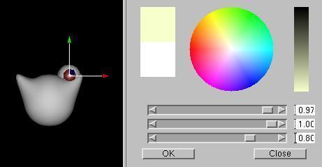
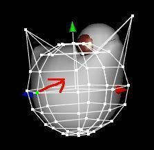
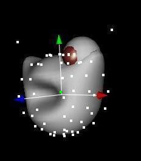
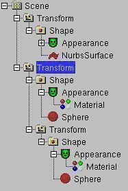
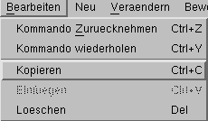
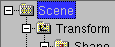
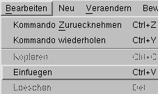
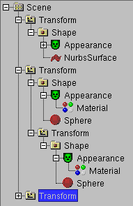
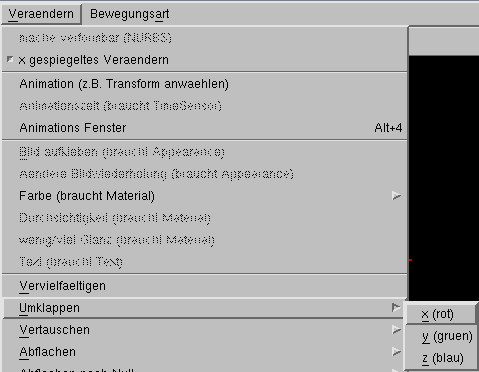
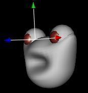
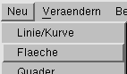
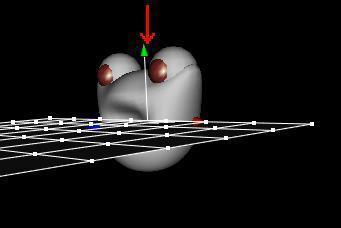
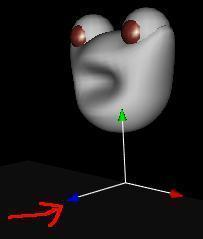
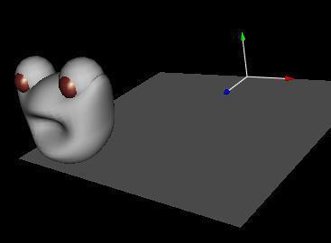
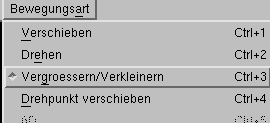
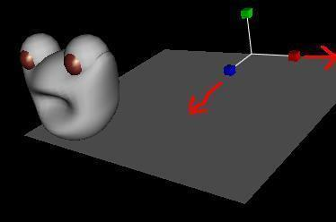
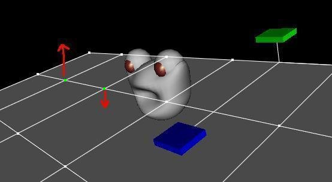
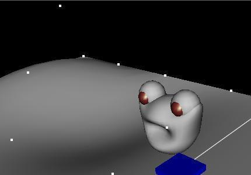